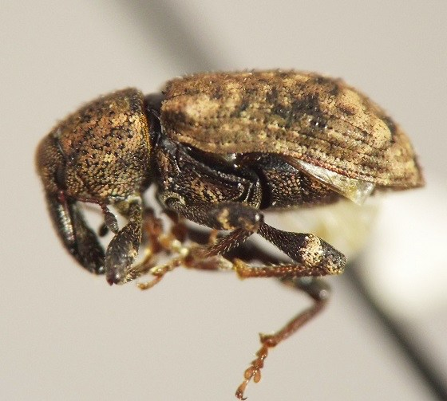
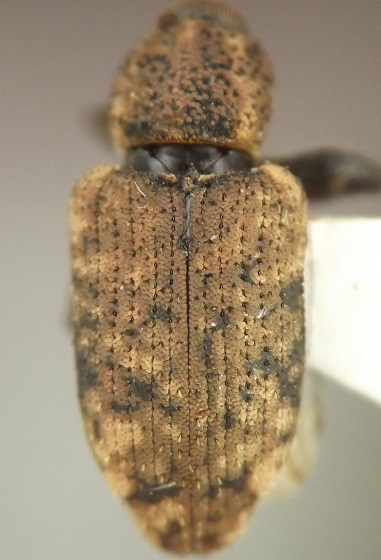
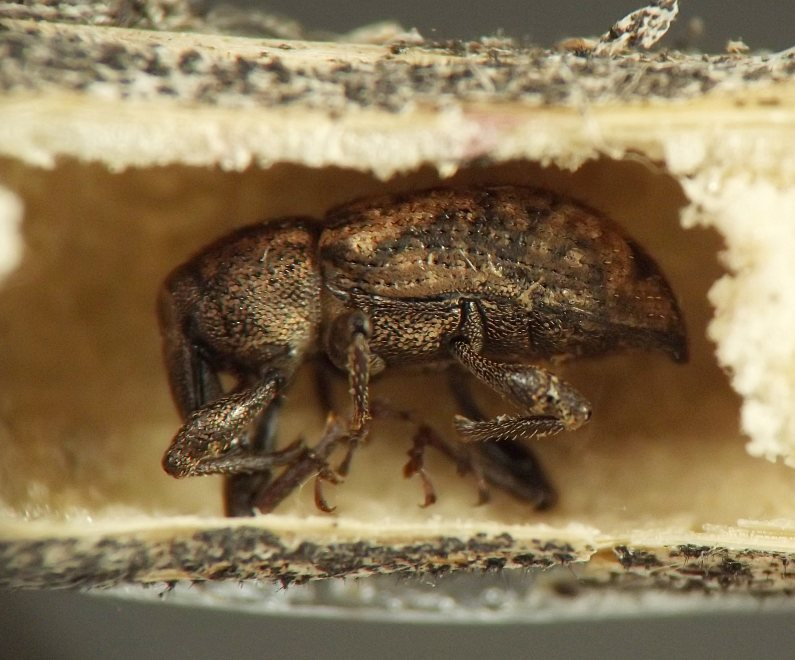

Stem and petiole borer (Coleoptera: Curculionidae) in Osmorhiza
| Record no.: | 0350 |
|---|---|
| Feeding guild: | Stem and petiole borer |
| Taxonomy: | Coleoptera: Curculionidae: Listronotus oregonensis |
| Stages observed: | trace, larva, adult |
| Distribution observed: | IA |
| Hosts in Osmorhiza: | undetermined O. sp., O. claytonii or O. longistylis (sweet cicely, aniseroot) |
In 2017, I found a larva tunneling near ground level in a lower stem of the host in mid-July. I reared it on carrot, and the adult weevil emerged on 11 September. Determination to species courtesy G. Hanley (pers. comm., after examining specimen in hand, 2022).
Also, in winter 2023-2024, I found a stem of the host that contained an adult Listronotus, dead in its pupation chamber, along with an agromyzid puparium (record 0352) surrounded by the weevil larva's frass. I surmised that the Listronotus larva had packed frass around the puparium while it was creating its pupation chamber. I reared an adult male Melanagromyza from the puparium.
Finally, I have observed one instance of a Listronotus larva (tentatively identified) tunneling in a basal leaf petiole of the host, but I did not record details or take photographs. Such larvae would most likely need to migrate to the main stem or belowground parts of the plant to complete their development.

 Prev
Prev
{kind=link}
{kind=link}


{kind=link}

{kind=link}
{kind=link}
Page created: March 30, 2026. Last update: none